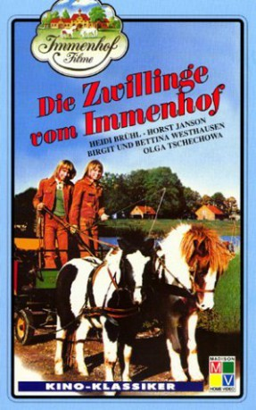

IMDB-Wertung: 4.0 / 10
IMDB-Wertung: 4.0 / 10  Metascore:
Metascore: 
Alternativ: Twins from Immen Farm (Originaltitel)
 IMDB-Wertung: 4.0 / 10 Metascore:
Jahr: 1973
Dauer: 89 Minuten
FSK: 6
Land: West-Deutschland Studio: Constantin FilmTonspuren:
Untertitel: Deutsch,
Auflösung: 1080p (1440x1080) Größe: 5591 MB
Regisseur: Wolfgang Schleif
Drehbuch: Wolfgang Schleif, Kurt Nachmann
Soundtrack: Kai Rautenberg
Darsteller:
 Heidi Brühl als Brigitte 'Dalli' Voss
Heidi Brühl als Brigitte 'Dalli' Voss Rudolf Schündler als Lehrer Zwilling
Rudolf Schündler als Lehrer ZwillingDatei: X:\6-Hexalogie(A-Z)\Immenhof\Zwillinge vom Immenhof, Die (1973, FSK6, 1440x1080).mkv seit 10.03.2019
Festplatte: HD Collection-3(N-Z)-6(A-Z)
 Es gibt insgesamt 9 Filme in der Gruppe '6-Hexalogie(A-Z)\Immenhof'
Es gibt insgesamt 9 Filme in der Gruppe '6-Hexalogie(A-Z)\Immenhof'